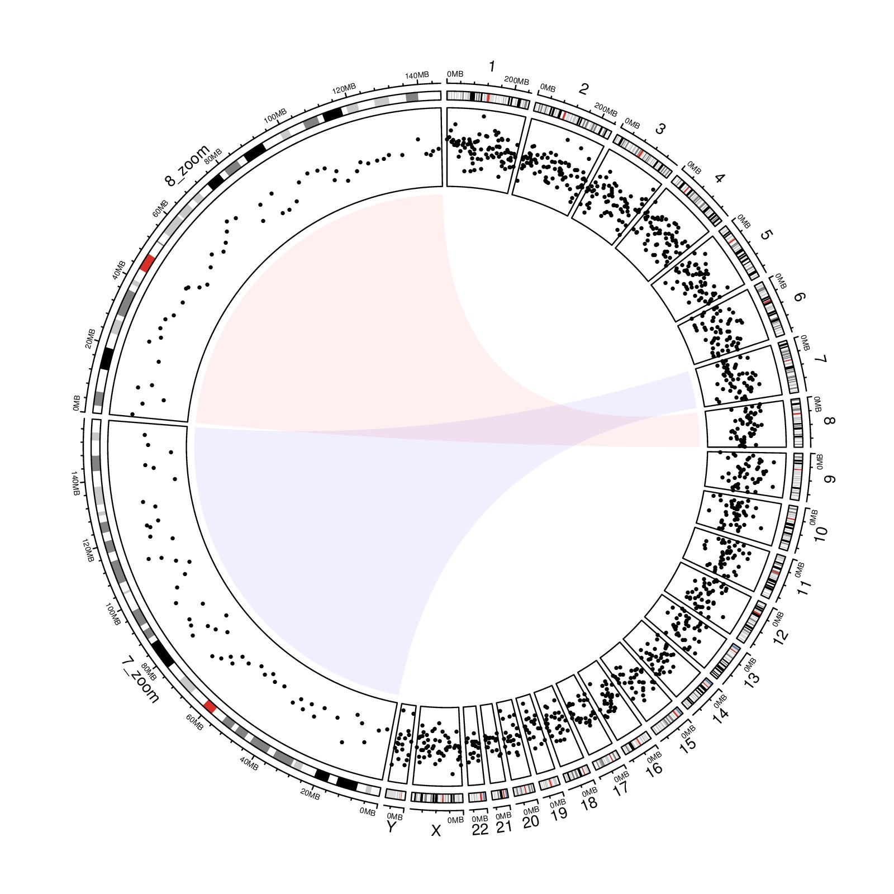

library(circlize)
cytoband = read.cytoband()
df = cytoband$df
chromosome = cytoband$chromosome
chr.len = cytoband$chr.len
df_zoom = df[df[[1]] %in% c("chr7", "chr8"), ]
df_zoom[[1]] = paste0(df_zoom[[1]], "_zoom")
df = rbind(df, df_zoom)
bed = generateRandomBed(nr = 1000)
bed_zoom = bed[bed[[1]] %in% c("chr7", "chr8"), ]
bed_zoom[[1]] = paste0(bed_zoom[[1]], "_zoom")
bed = rbind(bed, bed_zoom)
circos.par(start.degree = 90)
circos.initializeWithIdeogram(df, sort.chr = FALSE, sector.width = c(chr.len/sum(chr.len), 0.5, 0.5))
circos.genomicTrackPlotRegion(bed, panel.fun = function(region, value, ...) {
circos.genomicPoints(region, value, pch = 16, cex = 0.5)
})
circos.link("chr7", get.cell.meta.data("cell.xlim", sector.index = "chr7"),
"chr7_zoom", get.cell.meta.data("cell.xlim", sector.index = "chr7_zoom"),
col = "#0000FF10", border = NA)
circos.link("chr8", get.cell.meta.data("cell.xlim", sector.index = "chr8"),
"chr8_zoom", get.cell.meta.data("cell.xlim", sector.index = "chr8_zoom"),
col = "#FF000010", border = NA)
circos.clear()